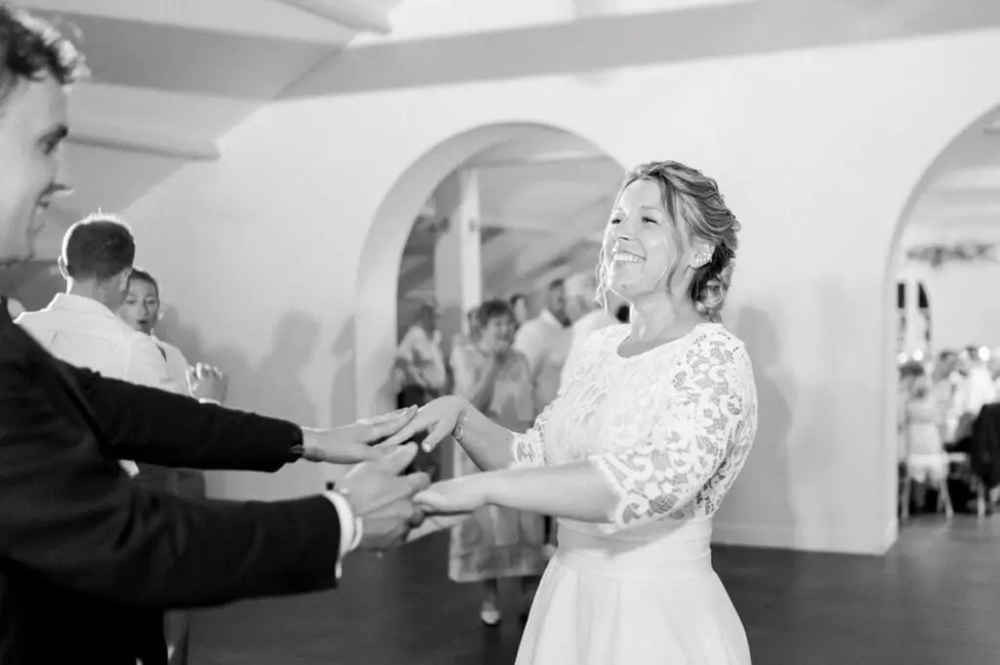

Une ouverture de bal réussie...
Comment réaliser une merveilleuse ouverture de bal pour votre mariage sur Bordeaux et ses alentours ? C’est un moment magique pour les nouveaux mariés : l’ouverture de bal. Que votre mariage soit grand ou petit, tous les moyens sont bons pour créer une première danse inoubliable pour votre couple.

Toutes les ouvertures de bals sont différentes, le but étant de différencier votre couple des autres couples mais surtout vous faire plaisir. Que vous restez dans le traditionnel avec une balade ou en cassant totalement les codes en surprenant vos invités, ce moment entre vous et votre conjoint restera dans vos mémoires alors autant bien se préparer.
Certains s’y préparent très tôt en suivant des cours de danse en duo et en réalisant une chorégraphie. Quelle soit simple ou non, votre chorégraphie peut également être à l’image de Dirty Dancing si vous adorez Patrick Swayze. Vous pouvez également rester dans la simplicité et en improvisant en vous laissant guider par vos émotions. Mais les balades ne vous intéressent pas ? Vous pouvez aisément créer des chorégraphies sur des musiques plus endiablées. Les choix sont multiples pour votre danse, votre chanson ainsi que votre entrée.
Et si vous n’aimez vraiment pas danser, d’autres possibilités s’offrent à vous. Vous pouvez simplement inaugurer la piste de danse en coupant un ruban ou bien en lançant un compte à rebours, ou alors prévoir une animation pour tous qui permettra d’installer l’ambiance dès les premiers instants. Pour garder une touche d’humour, vous pouvez aussi confier l’ouverture de bal à vos témoins. Le plus important est de réaliser un début de soirée qui correspond à votre couple comme à votre mariage, quel que soit le thème.
En tant que Wedding planner et Wedding designer, je peux aisément vous proposez mon aide afin d’organiser votre mariage. N’hésitez pas à me contacter, je me ferais une joie de vous répondre.



Lovely Day Event c'est plusieurs types de prestations
L'organisation de mariage
Je vais intervenir sur toutes les étapes de vos préparatifs et vous guider dans vos choix. Je suis force de proposition pour que votre mariage ne ressemble qu’à vous.
Décoration de mariage
Créative et passionnée, je suis certifiée Wedding Designer et je conçois une ambiance scénographique qui correspond au thème de votre mariage.
Coordination le jour J
Je serai le chef d’orchestre pour gérer les différents prestataires, la mise en place de votre décoration et le déroulement de cette belle journée.